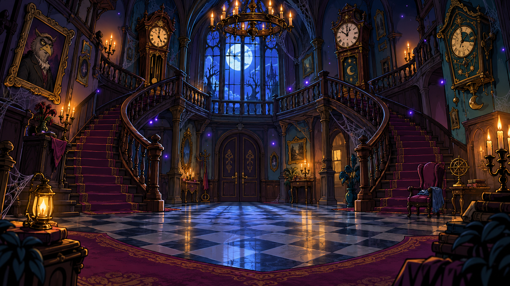

Threadvale ManorThe PySpark after-hours investigation

Act I · The ArrivalThreadvale Manor
An original cartoon adventure. Every object has a motive. Even the wallpaper.
At 11:59 p.m., the clocks in Threadvale Manor strike thirteen. The dashboard says 87 threads, the portrait says one, and two identical moon-cake receipts say SUCCESS. A purple Tangle-Wraith crawls out of the chart, wearing the missing auditor badge of Edda Vale.
Explore rooms, question the residents, solve logic puzzles, and run three hands-on experiments in the supplied PySpark API emulator. Every gate needs evidence. The orchestra is dramatic; the explanations are clear.
All three routes cover the same story and core facts. The order, explanation depth, and puzzle challenge adapt to your role. You can change roles later.
